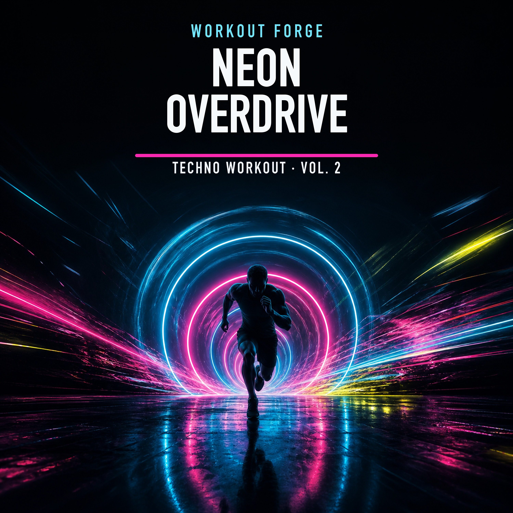

Workout Forge Music CDN
40 full-length workout tracks · progressive MP3 · stable whole-file URLs with byte-range seeking.
catalog.json · manifest.json
Neon Overdrive — Techno Workout Vol. 2

- 01. Cold Startdriving techno · 3:31
- 02. Arc Runnerpeak-time techno · 4:07
- 03. Torque Bloommelodic techno · 3:26
- 04. Neon Lactichard techno · 3:25
- 05. Twelve Floors Upprogressive techno · 4:17
- 06. Chrome Breathhypnotic techno · 4:07
- 07. Pulse Dividetech trance · 2:54
- 08. Redline Geometryindustrial techno · 4:30
- 09. Ghost in the Treadmilldark techno · 4:54
- 10. Kilowatt Veinselectro techno · 5:15
- 11. No Idle Statehardgroove techno · 3:45
- 12. Pressure Languagewarehouse techno · 4:17
- 13. Black Glass Sprintrave techno · 2:42
- 14. Muscle Memory Machineminimal techno · 2:53
- 15. Threshold Citydriving melodic techno · 4:00
- 16. Gravity Has Teethdark industrial techno · 5:31
- 17. Overclock the Bodyhard techno · 4:20
- 18. Last Light Fasteruplifting techno · 3:28
- 19. The Meter Breakspeak-time techno · 3:35
- 20. Afterburn Silencecinematic techno · 2:38
Hard Rock Metal Workout Vol. 1

- 01. Break the Floorhard rock · 3:20
- 02. Iron Pulseindustrial metal · 4:07
- 03. No Mercy Modenu metal · 3:41
- 04. Furnace Lungsalternative metal · 3:20
- 05. Barbell Thundergroove metal · 2:48
- 06. Blood Hot Signalhard rock · 3:37
- 07. Set Fire to the Timerrap metal · 3:24
- 08. Gravel in the Veinssouthern metal · 3:23
- 09. Teeth on the Chainnu metal · 3:17
- 10. Last Rep Riothard rock · 3:39
- 11. Caged Animal Cardioindustrial metal · 3:20
- 12. Hammer the Doubtgroove metal · 3:11
- 13. Metal in the Mirroralternative metal · 3:49
- 14. Sweat Like Voltageelectronic rock · 3:29
- 15. Deadlift Sunrisehard rock · 3:34
- 16. Push Until It Movesgroove metal · 3:27
- 17. The Beast Counts Downindustrial metal · 3:11
- 18. Concrete Haloalternative metal · 3:36
- 19. Rage With a Steering Wheelrap rock · 3:30
- 20. Empty the Tankhard rock · 2:53